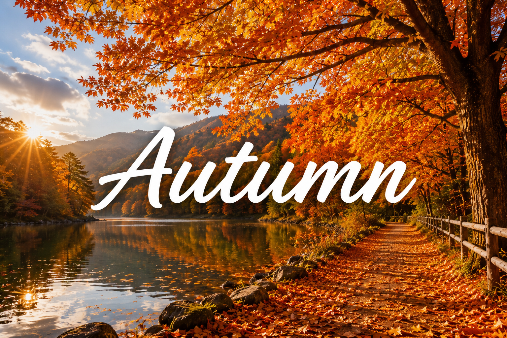

فصل الخريف

الخريف 🍂 هو فصل الجو اللطيف والهواء المنعش 🌬️. في الخريف أوراق الشجر بتتغير ألوانها وبتقع على الأرض 🍁. الناس بتحب تتمشى في الحدائق وتستمتع بالمناظر الجميلة. هو فصل الهدوء والطبيعة والألوان الرائعة.
☀️ 🍂 الخريف فصل الألوان والهواء المنعش
فصل الخريف هو واحد من أجمل فصول السنة، وفيه الجو بيكون معتدل ولطيف 🍁. الجو في الخريف مش حار زي الصيف ولا بارد زي الشتاء، وده بيخلينا نستمتع بالخروج واللعب في الهواء الطلق 🌤️. في فصل الخريف بتتغير ألوان أوراق الشجر من الأخضر إلى الأصفر والبرتقالي والأحمر 🍂، وبعد كده بتقع على الأرض. درجة الحرارة بتبدأ تنخفض تدريجيًا، علشان كده بنلبس ملابس خفيفة أو جاكيت خفيف 🧥. في الخريف بنحب نتمشى في الحدائق ونشوف الأشجار الجميلة ونستمتع بالهواء النقي 🌳.
🍁 مميزات فصل الخريف
- 🍂 أوراق الشجر بتتغير لألوان جميلة.
- 🌤️ الجو معتدل ومناسب للخروج.
- 🌬️ الهواء بيكون منعش ولطيف.
- 🚶♂️ مناسب للمشي والرحلات في الحدائق.
- 📚 بداية العام الدراسي والرجوع للمدرسة.
🌳 أنشطة جميلة في فصل الخريف
- 🍁 جمع أوراق الشجر الملونة.
- 🚶♀️ المشي في الحدائق والاستمتاع بالطبيعة.
- 📸 التقاط صور للأشجار والمناظر الجميلة.
- 🎨 الرسم والتلوين بألوان الخريف.
- 🪁 اللعب في الهواء الطلق مع العائلة والأصدقاء.